The Graph Widget is the new version of the Diagram Widget. We're using a new name because it's necessary for both
versions of the widget to coexist in Protégé while users convert existing ontologies to use the new version.
What's New?
Documentation
What's New?
Big Differences
To follow are some significant differences between the Diagram and Graph Widgets that will be particularly
noticeable to current users:
- We no longer store diagram specific information such as node size and position in the onotology. This eliminates the
step of having to include the "diagram.pprj" project in your ontology.
- The Graph Widget offers two different types of connectors:
- Reified Relation - A connector between two nodes that has an underlying instance.
- Simple Connector - A connector between two nodes that has no underlying instance.
Examples of how to create the different connectors types are available in the Getting Started tutorial.
- Rather than reinvent the wheel (write our own graphics library), we used a third party graphics library
called JGo from Northwoods Software. JGo has no runtime
fees but if you'd like to extend the GraphWidget and you need access to the JGo library, contact them to purchase a license.
- Rather than connecting nodes by dragging and dropping connectors from a palette, each node has a port
in the center. You click on the port and start dragging which causes a line to appear. Drag your mouse over the node's
port that you want to connect to, and the line will snap into place. If there is more than one type of valid connector
between two nodes, a dialog box will appear that allows you to choose which type of connector to create.
New Features
- Labeled connectors.
- Right clicking on a connector displays a menu that allows you to insert or remove any number of points in the line.
- In-place text editing of node and connector labels for classes that have a designated browser key.
Enhancements
- Greatly improved selection appearance for nodes and connectors. Primary selections are green and secondary selections
are blue green as shown below:
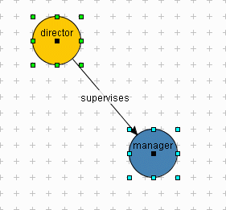
- Resize handles make it much easier to resize nodes. Each time you click on a node, eight resize handles appear along
the bounding rectangle of the node. You can grab any of these handles with your mouse to resize nodes. You can also use
the resize handles to drag and reposition connector points. Examples of both are shown below:
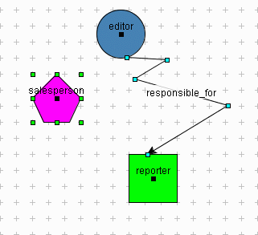
Documentation
What is the Graph Widget ?
The Graph Widget is an alternative to
forms
for creating and populating instances of classes in Protégé. It is also particularly useful for visualizing
networks of instances and relationships between instances. To gain a better understanding of this definition, follow the
Getting Started tutorial offered below.
Getting Started
This tutorial assumes a basic working knowledge of Protégé. For more information about how to use
Protégé, see our
User's Guide or
Getting Started with Protege.
Step 1: Download GraphWidgetExample project
For those of you who are familiar with Protégé, you'll recognize this project as a slightly modified version of the
Newspaper example. We'll step through the creation of an organization chart for a group of Newspaper employees.
Download Project
Step 2: Configure Organization class
- Open Protégé and load the GraphWidgetExample project from step 1.
- Choose the
Organization class in the Relationship pane on the Classes tab.
- Create a new slot called
organization_chart and attach it to the Organization class. The slot
should be of type Instance, cardinality multiple, and have the Employee class as the allowed class type. We
chose Employee as the allowed class type because an organization chart typically displays relationships between
employees working within an organization.
Screenshot of Protégé after completion of step 2:
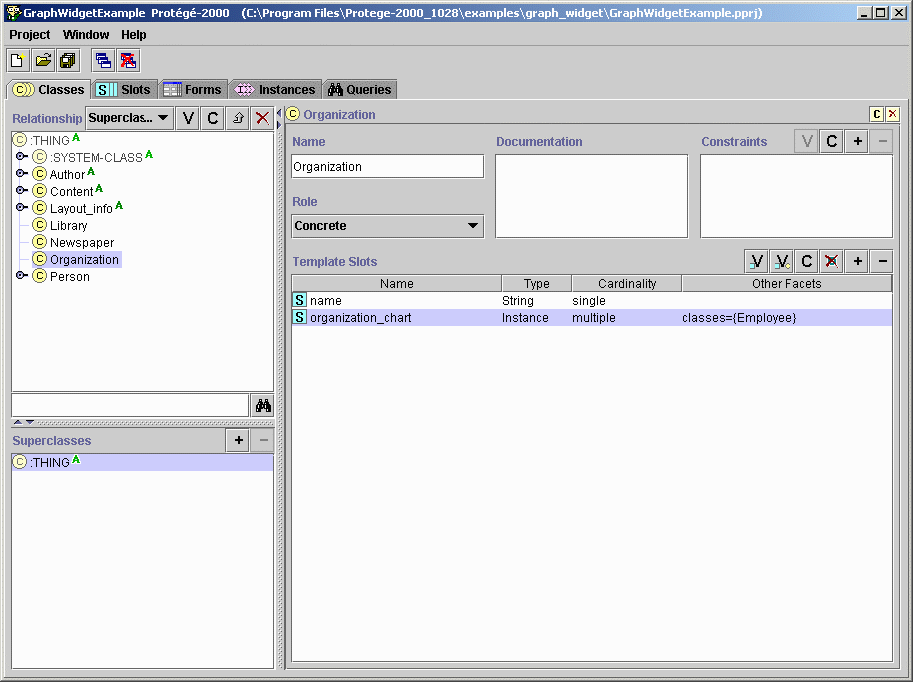 configure organization class" width="913" height="682" border="0">
Step 3: Configure organization_chart slot to use Graph Widget
- Navigate to the Forms tab and choose
Organization from the Forms list.
- Select the
organization_chart slot and choose GraphWidget from the Selected Widget Type
combo box.
Screenshot of Protégé after completion of step 3:
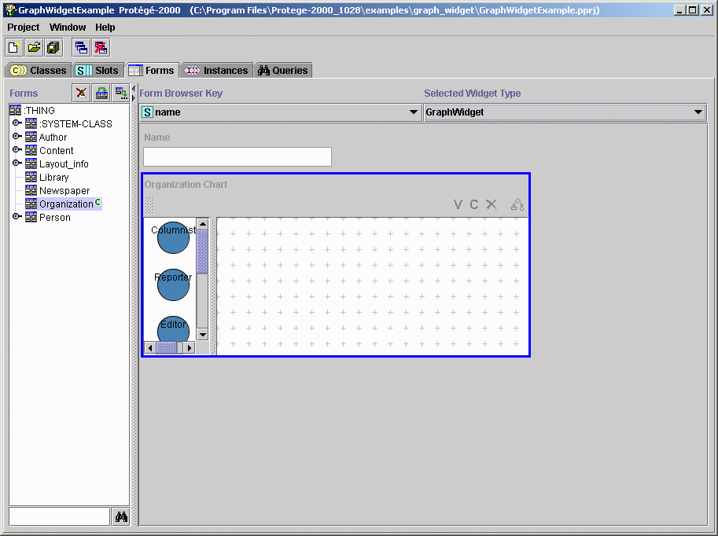 configure organization_slot to use graph widget" width="913" height="682" border="0">
Step 4: Configure node appearance
Nodes are the objects that appear in the palette on the left-hand side of the Graph Widget. Each node represents a concrete allowed class
for the
organization_chart slot (or whatever slot is configured to use the Graph Widget). By default, the Graph Widget
assigns all nodes the same shape and color. To change the node shape and color or the text properties of the node's labels:
- Double-click on the
organization_chart slot to bring up the Graph Widget configuration dialog.
- Select the Nodes tab.
Screenshot of the Graph Widget configuration dialog:
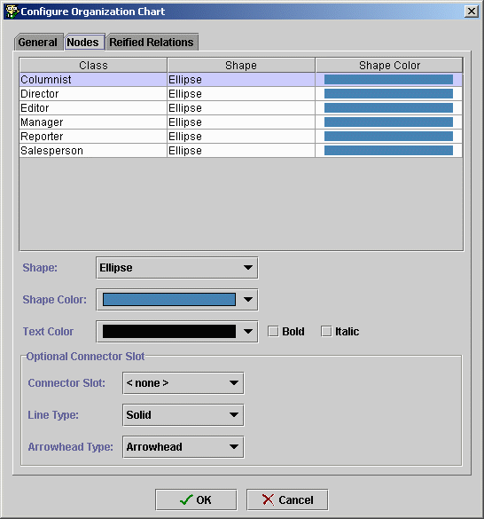 configure node appearance" width="546" height="585" border="0">
The table in the top portion of the Nodes tab contains a list of all the concret allowed classes for the
organization_chart slot.
Note that the
Employee class does not appear here because it's an abstract class. Rather, all the the concrete subclasses
of
Employee are displayed. Try selecting various nodes from the table and changing their shape and color using the Shape
and Shape Color combo boxes. You can also change the text properties of the node's labels using the Text Color combo box and the Bold
and Italic check boxes.
You can ignore the Optional Connector Slot area as we will deal with this in a later step. To follow is a example of what the configuration
dialog might look like after configuring node appearance:
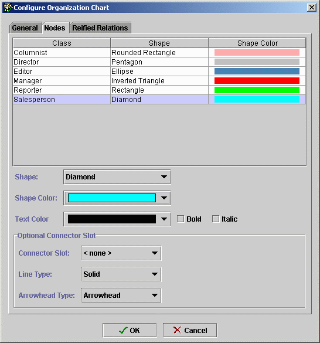 configure node appearance" width="546" height="585" border="0">
Click OK to save your changes.
(Note that it is not a necessary step in this tutorial to select the same shapes and colors displayed in
the screenshot above).
Step 5: Configure a simple connector
There are two types of connectors in the new version of the Graph Widget. First we will look at the simple connector type which is a connector
between two nodes that doesn't have an underlying instance. The allowed class type for the
organization_slot is
Employee. Let's
assume that we are interested in focusing on the
Editor subclass of
Employee and seeing a graphical representation of the relationship between
editors and other employees in the newspaper organization. There are two steps to complete for configuring a simple connector:
- Choose the
Editor class in the Relationship pane on the Classes tab and create and attach a slot called
responsible_for. The slot should be of type Instance, cardinality multiple, and have the Employee
class as the allowed class type.
Screenshot of Protégé after completion of step 5a:
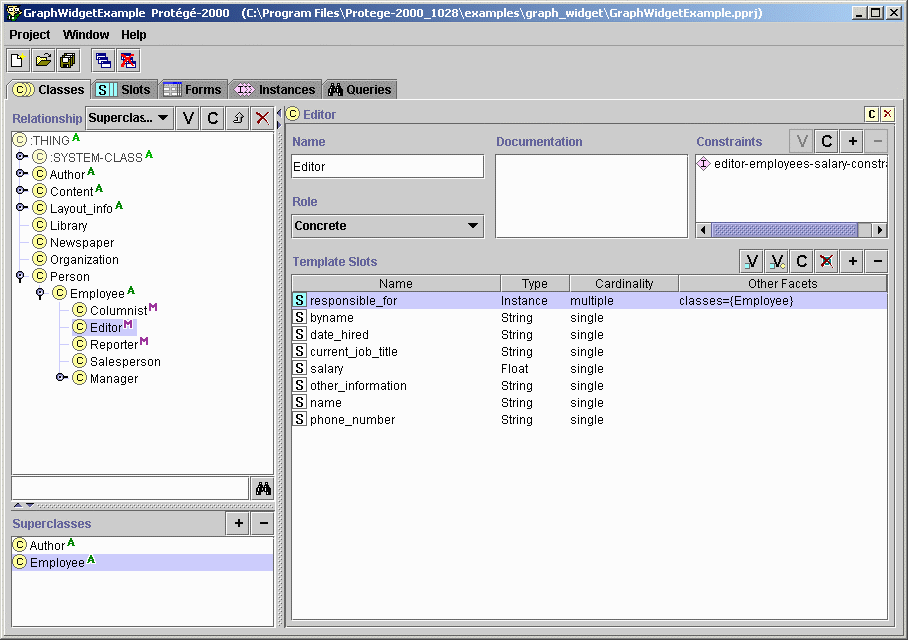 configure simple connector" width="908" height="640" border="0">
- On the Forms tab, bring up the widget configuration dialog again and select the
Editor class on the Nodes
tab. Choose responsible_for from the Connector Slot combo box. By making this selection, we are indicating to
the Graph Widget that we want to be able to draw connectors between Editor nodes and other nodes of type Employee.
In other words, for each allowed class displayed in the table on the upper portion of the Nodes tab, the Connector Slot combo box
will display a list of type Instance, cardinality multiple slots for that class. You can choose one of these slots from the combo box to
indicate what other class types you can draw connectors to. Click OK to save your changes.
Screenshot of widget configuration dialog after completion of step 5b:
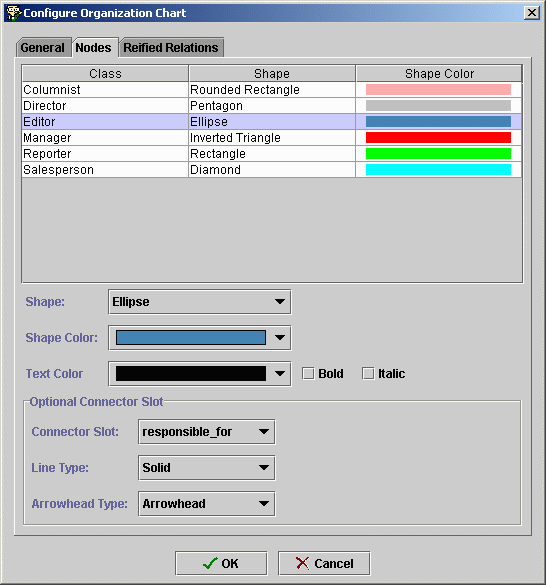 configure simple connector" width="546" height="585" border="0">
Step 6: Populate an instance of the Graph Widget using nodes and simple connectors
In this step, we'll look at an instance of the
Organization class and learn how to populate the Graph Widget with nodes and
simple connectors.
Choose the
Organization class in the Classes pane on the Instances tab. Select San Jose Mercury News from the
Direct Instances pane. To create an instance of the
Editor class, select the
Editor node in the palette and drag and drop it onto
the view. Repeat this step again so that you have two nodes in the Graph Widget view. To draw a simple connector between the two
Editor nodes, click
on one of the node's ports (small dot in the center of the node) and drag your mouse to the other port. When you release your mouse, a connector
appears between the two nodes, showing the
responsible_for relationship.
Tips:
- Click and drag nodes to reposition them in the view.
- When a node is selected, grab any of the eight resize handles to resize the node.
- Since the Editor class has a browser key (the
name slot), you can single click on the node's labels and use in-place
text editing to change the node's text.
- Double click on nodes to bring up Instance Forms.
- Use the ´C´ button on the Graph Widget toolbar to create nodes in the view as an alternative to dragging and dropping
from the palette.
- Select multiple nodes and click the ´V´ button to bring up multiple Instance Forms.
- Right click on connectors to insert extra points via the Insert Point right-mouse menu item.
- Right click on connectors to remove segments via the Remove Segment right-mouse menu item.
Screenshot of San Jose Mercury News Instance Form after completion of step 6:
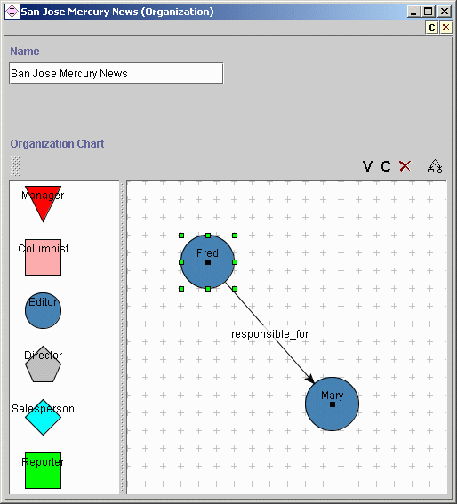 populate an instance of the graph widget" width="514" height="567" border="0">
Continue adding nodes of various types to the Graph Widget. Notice also that the widget will only allow you to draw valid simple connectors
between nodes. Since we only specified one connector slot for the
Editor class, we can only draw simple connectors
from
Editor nodes
to other nodes, but not the other way around. For example, try drawing a simple connector from a
Columnist
or
Reporter node to another node. The Graph Widget won't allow such a connection.
Additional screenshot of SJ Mercury News Instance Form after adding more nodes and connectors:
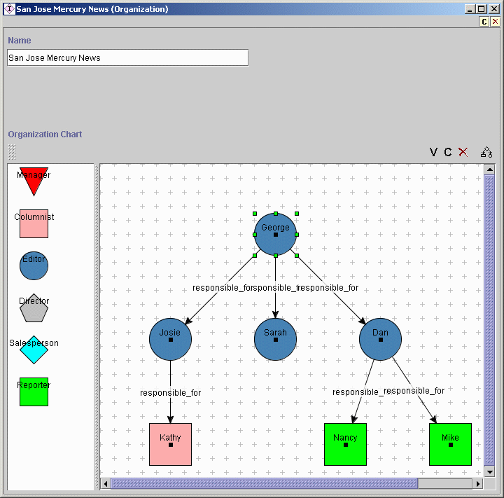 populate an instance of the graph widget" width="720" height="711" border="0">
Tip:
- Use the Perform automatic layout button to automatically lay out nodes and connectors in the Graph Widget.
Step 7: Configure a reified relation
In this step we will work with the other connector type provided by the Graph Widget called a reified relation. A reified relation is a connector
between nodes that has an underlying instance. You use this type of connector when you need to store additional information about the relationship
between two nodes. There are three steps to configure a reified relation:
- Subclass the :DIRECTED-BINARY-RELATION system class.
- Choose the :DIRECTED-BINARY-RELATION system class in the Relationship pane on the Classes tab.
- Create a subclass called
Manager Supervision Relation.
- Change the allowed class type of the :FROM slot to
Manager.
- Change the allowed class type of the :TO slot to
Employee.
What we have just defined is a class that represents a reified relation between Manager and
Employee nodes. Note that you can add additional slots to this class to keep track of other
information about the relationship. The screenshot below has examples of what sort of "other information"
you might want to add. Note that it's not a necessary step in this tutorial to add additonal
slots to the Manager Supervision Relation class.
Screenshot of Protégé after completion of step 7a:
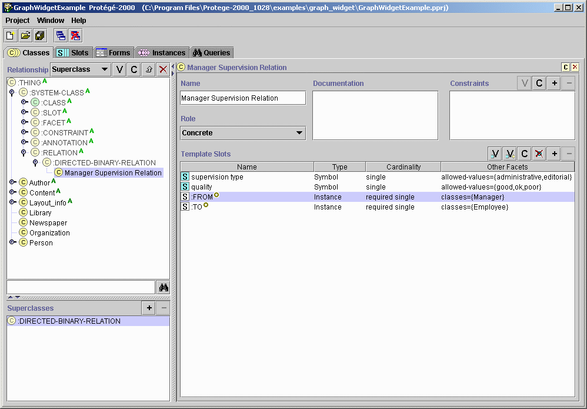 configure a reified relation" width="998" height="695" border="0">
- Create a slot to hold reified relations.
If you want to use reified relations for a particular class, you need to add a slot to the class that designates
what the valid relations are for that class. For our example, add a slot to the Organization class called
employee_relationships. The slot should be of type Instance, cardinality multiple, and have the
Manager Supervision Relation class as the allowed class type.
Screenshot of Protégé after completion of step 7b:
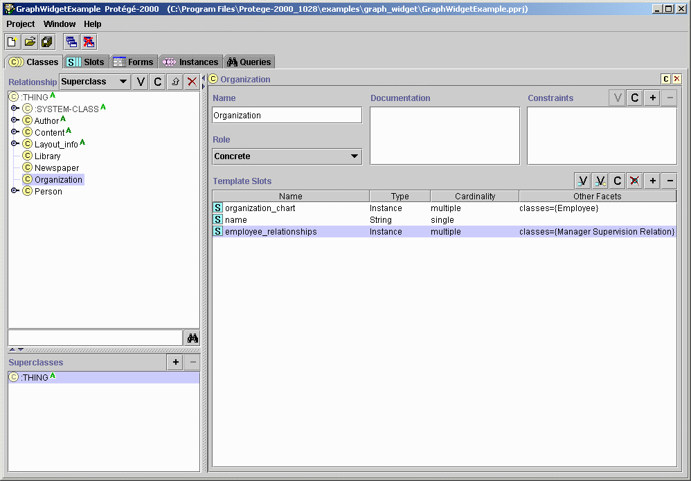 configure a reified relation" width="998" height="695" border="0">
- Tell the Graph Widget which slot on your class holds reified relations.
The last step is to let the Graph Widget know which slot on your class has been created to hold reified relations. This
is done in the widget configuration dialog:
- Return to the Forms tab and bring up the widget configuration dialog.
- Click on the Reified Relations tab.
- Choose
employee_relationships from the Relation Slots combo box.
Screenshot of widget configuration dialog after completion of step 7c:
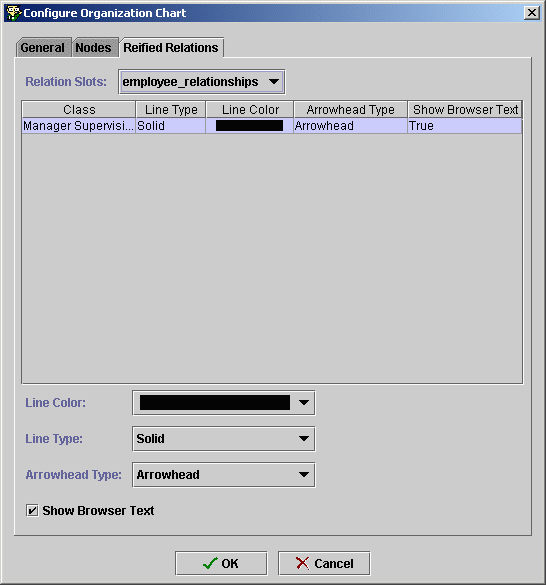 configure a reified relation" width="546" height="585" border="0">
Tips:
** Use the Line Color, Line Type, and Arrowhead Type combo boxes to change the appearance of the
reified relation connector.
** Uncheck the Show Browser Text check box if you don't want your reified relation connectors to have
labels on them.
- Click OK to save your changes.
Step 8: Populate an instance of the Graph Widget using nodes and reified relations
In this step, we'll look at an instance of the
Organization class and learn how to populate the Graph Widget with nodes
and reified relations.
Choose the
Organization class in the Classes pane on the Instances tab. Create a new instance of the
Organization class called
San Francisco Examiner. Using the Graph Widget, create two instances
of the
Manager class by dragging and dropping the
Manager node from the palette onto the view. To draw
a reified relation between the two nodes, click on one of the node's ports (small dot in the center of the node) and drag your mouse
to the other port. When you release your mouse, a reified relation appears between the two nodes, showing a managerial relationship.
Screenshot of Protégé after completion of step 8:
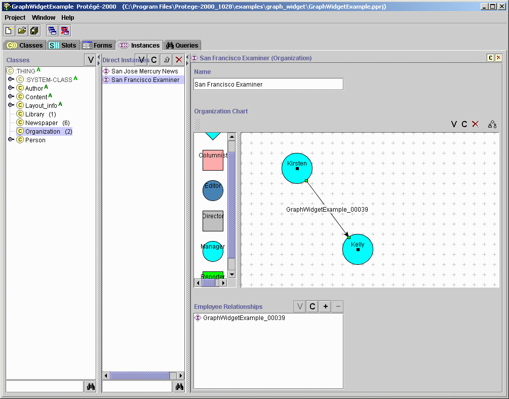 populate an instance of the graph widget" width="1005" height="788" border="0">
Tips:
- Double click on the reified relation connector to bring up the Instance Form for the
Manager Supervision Relation class.
- Designate a browser key for the
Manager Supervision Relation class to enable in-place editing of the
reified relation connector's label. (One possibility would be to attach the name slot).
- On the Forms tab, set the Selected Widget Type for the
employee_relationships slot to <none> to expand
the amount of display for the Graph Widget.
Continue adding nodes and experimenting with reified relations. To follow is a screenshot of the San Francisco Examiner Instance Form
after adding more nodes, reified relations, a simple connector, and completing the tips specified above:
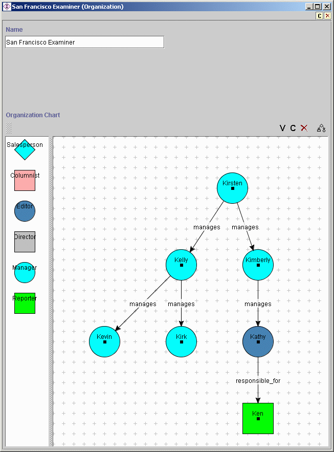 populate an instance of the graph widget" width="653" height="883" border="0">
Converting from the Diagram Widget to the Graph Widget
To follow are some notes (courtesy of
Samson Tu) on how to convert existing instances of the Diagram Widget to the Graph Widget.
Assumptions:
- You've installed Protégé version 1.8, build 1032 or later.
- You're interested in saving existing diagrams.
- You're using a file system back-end.
1st Scenario:
You have a project that includes the diagram ontology, that has a number of diagram instances, and you do not need to use the
existing location information of nodes and connectors.
- Make the
:DIRECTED-BINARY-RELATION class the parent class of your classes that inherit from the diagram
widget Connector class. Your existing subclasses of the Connector class will then inherit
the :FROM and :TO slots from the :DIRECTED-BINARY-RELATION class.
- In your existing subclasses of the Network class, add a multi-valued slot (you can choose your own name), whose allowed
classes include the allowed classes of the existing
connectors slot. This slot will be used to hold arc
information in the new Graph Widget.
- Save the project.
- Open the pins file in a text editor.
- Globally replace
first_object with :FROM and second_object with
:TO (assuming that you are not using the first_object or second_object slots for
anything else).
- Rename the slot
connectors in your instances that hold the diagram to the new slot you've defined in
step 2.
- Save the pins file.
- Reload the project.
- Change the metaclasses of your old
Connector and Network classes to :STANDARD_CLASS
(or any metaclass your want).
- Drop
Connector and Network classes as parents of your classes.
- Delete instances of
ObjectLocation, Rectangle, and Point.
- In the Forms tab, configure appropriate classes and slots in your project (that used to be shown as diagrams) to use the
new Graph Widget.
Do not "uninclude" the diagram project from your own project until you have converted all projects that include
the project where you specify the classes that make use of the diagram ontology.
2nd Scenario:
You have a project (Project A) that includes another project (Project B) where diagrams are configured and you do not need to use
the existing location information of nodes and connectors.
- Convert Project B where you specify the classes that make use of the diagram ontology (see 1st scenario above).
- In a text editor, open the pins file for Project A. Globally replace
first_object with :FROM and
second_object with :TO (assuming that you are not using the first_object or
second_object slots for anything else).
- Rename the slot
connectors in your instances that hold the diagram to the new slot name you've defined.
- Save the pins file.
- You may have to reconfigure the classes of Project A in the Forms tab so that the Graph Widget gets used appropriately.
Alternatively, you can "import" the pont and pins files to rebuild the pprj file. When a new pprj file is built,
Protégé will copy the widget configuration information from included projects.
Known Bugs
- There are some cases where the positioning information is lost for nodes and connectors the first time you click away from
a new instance of the graph widget. The workaround for this bug is to click away from new instances of the graph widget and come
back to them before beginning to populate them with new nodes and connectors.
Known Feature Requests
- An additional arrowhead type of circle
- The ability to designate arrowhead type for source arrowhead (can only specify destination arrowhead now)
- The ability to control the color of nodes based on the value of a specified slot
- Copy and paste for nodes within an instance of the graph widget
- Copy and paste for nodes between different instances of the graph widget
- Color chooser dialog to allow for a greater selection of node and connector colors in the widget configuration dialog